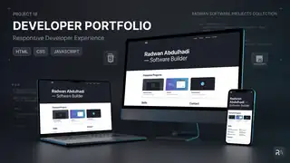

عن المشروع
تجربة موقع شخصي متجاوب لعرض الهوية والمهارات والمشاريع.
تجربة موقع شخصي متجاوب لعرض الهوية والمهارات والمشاريع.
A responsive developer portfolio experiment for presenting skills and work.

تجربة موقع شخصي متجاوب لعرض الهوية والمهارات والمشاريع.